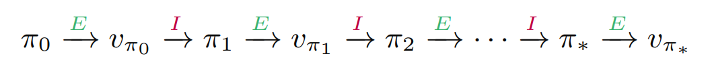
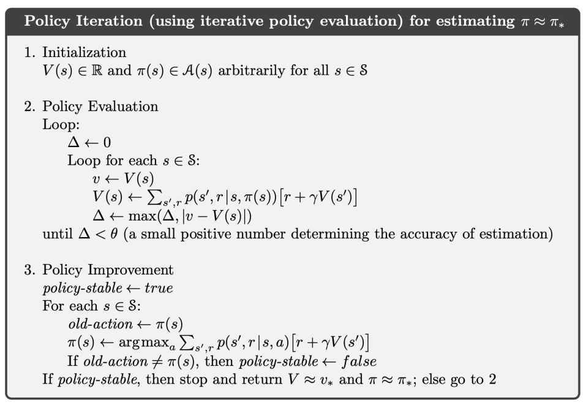
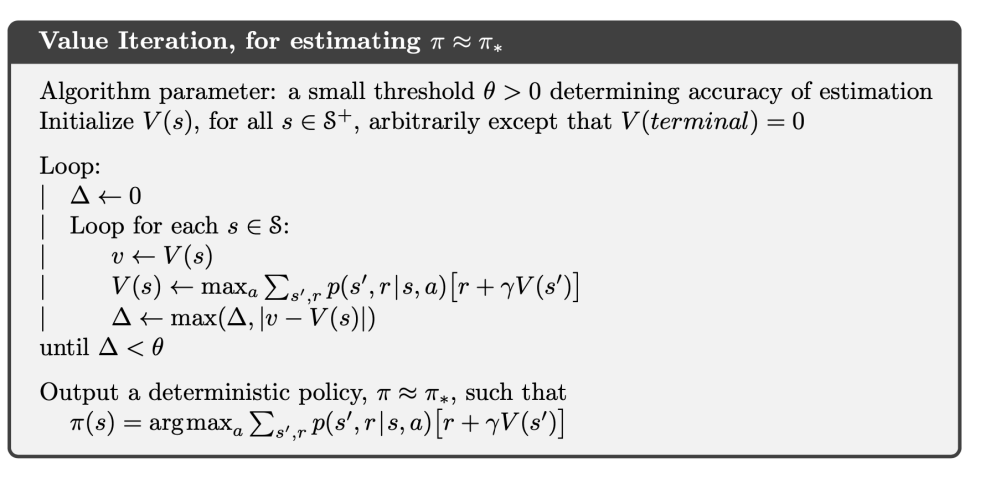
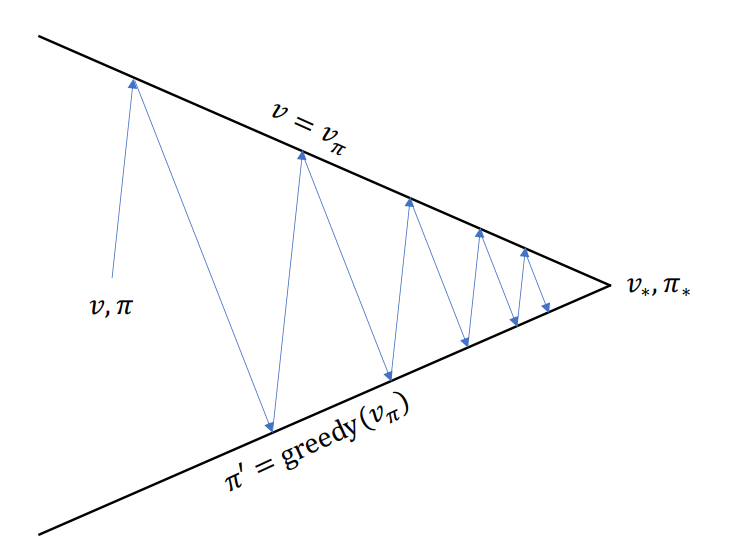
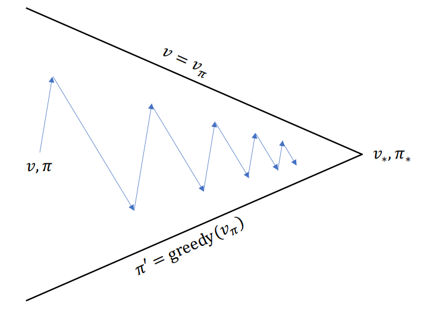

Dynamic Programming
강화 학습에서 dynamic programming (DP)이란 환경에 대한 완벽한 모델이 주어졌다는 전제 하에, 다시 말해 dynamics function \(p\)가 주어졌다는 가정 하에 optimal policy를 찾아내는 방법이다. 즉 MDP를 푸는 방법 중 하나로 제시된다.
거꾸로 말해서, \(p\)가 주어져 있지 않다면 DP를 사용할 수 없지만 강화 학습에서 사용되는 대부분의 방법들은 사실상 DP와 같은 효과를 만들어 내기 위해 시도하는 방법들에 불과하다.
DP는 policy evaluation과 policy improvement라는 두 단계로 구분된다. Policy evaluation은 주어진 policy의 value function을 계산하는 과정이고, policy improvement는 value function을 통해 policy를 개선하는 과정이다. 두 과정을 반복하다 보면 언젠가는 optimal policy 를 찾을 수 있고, 우리의 목표가 달성된다.
Policy Evaluation
간단하게 말해서 policy \(\pi\)를 주면 value function \(v_\pi\)를 계산하는 과정이다. 이론적으로는 \(\pi\)가 주어지면 \(v_\pi\)를 정의를 통해 바로 계산할 수 있지만, 차원의 저주와 같은 문제로 인해 현실적으로 쉽지 않다. 때문에 iteration을 통해 계산해내는 과정이 필요하고, 이 과정이 policy evaluation에서 이뤄진다. Prediction problem이라고도 부른다.
기본적으로 Bellman equation을 통해 계산해낸다.
\[v_\pi(s) = \sum_{a \in \mathcal{A}(s)} \pi(a \mid s) \sum_{s' \in \mathcal{S}} \sum_{r \in \mathcal{R}} p(s', r \mid s, a) \left( r + \gamma v_\pi(s') \right)\]
초기값 \(v_0\)는 임의로 주고, \(v_1, v_2, \cdots\)을 Bellman equation으로 업데이트해서 계산해준다. 즉,
\[v_{k+1}(s) \longleftarrow \sum_{a \in \mathcal{A}(s)} \pi(a \mid s) \sum_{s' \in \mathcal{S}} \sum_{r \in \mathcal{R}} p(s', r \mid s, a) \left( r + \gamma v_k(s') \right)\]
으로 주어진다.
Policy Improvement
Policy evaluation에서 value function \(v_\pi\)를 계산해 냈으면 이를 통해 \(\pi\)보다 더 나은 정책 \(\pi'\)을 계산해 낼 수 있고, 이를 policy improvement라고 부른다. Control이라고도 부른다. 구체적으로는 다음의 정리에 기반한다.
Policy Improvement Theorem
Let \(\pi\) and \(\pi'\) be any pair of deterministic policies such that, for all \(s \in \mathcal{S}\), \[ q_\pi(s, \pi'(s)) \ge v_\pi(s). \]
Then the policy \(\pi'\) must be as good as, or better than \(\pi\).
우리는 \(\pi\)를 통해 새로운 정책 \(\pi'\)을 유도해내려고 한다. 이때 \(\pi'\)은 위 정리의 가정을 만족하도록 정의해야 하는데, 다음과 같이 assign해주면 된다.
\[\begin{align*} \pi'(s) &\leftarrow \underset{a}{\arg\max} \, q_\pi(s, a) \\ &= \underset{a}{\arg\max} \, \mathbb{E} [R_{t+1} + \gamma v_\pi(S_{t+1}) \mid S_t = s, A_t = a] \\ &= \underset{a}{\arg\max} \sum_{s', r} p(s', r \mid s, a) [r + \gamma v_\pi(s')] \end{align*}\]
보이는 바와 같이 그리디하게 선택하는 방법이다.
한편, 이렇게 개선된 정책 \(\pi'\)가 진짜 optimal policy라고 어떻게 확신할 수 있을까? 만약 \(\pi\)와 \(\pi'\)이 조금이라도 차이가 있다면 \(\pi'\)이 \(\pi\)에 비해 개선된 정책이라는 뜻이므로 우리는 optimal하다고 확신할 수 없지만, 만약 차이가 없다면 더이상 개선될 여지가 없는 정책, 다시 말해 optimal에 도달했다고 생각할 수 있으므로 더이상 변화가 없을 때까지 policy evaluation과 improvement를 반복하게 된다. 즉 다음과 같은 iteration이 이루어지고, 이를 policy iteration이라고 부른다.

Policy Iteration Pseudocode

Value Iteration
한편 policy iteration은 한 가지 단점이 있는데, policy evaluation 과정에서 꽤나 많은 반복이 필요하다는 점이다. 어차피 중간중간 모든 정책들을 사용할 것도 아닌데, 이 모든 정책들의 value function을 다 구할 필요가 있을까?
이러한 질문에서 나온 방법이 value interation이다. Policy iteration이 Bellman equation에 근거하고 있는 것과 달리, value interation은 Bellman optimal equation에 기반한다. Policy iteration에서 중간중간의 정책 \(\pi\)의 value function \(v_\pi\)를 업데이트해 가며 수렴하도록 기다리는 반면, value iteration은 max를 활용해 한 번에 값을 정해버린다. 이렇게 \(\pi\)를 개선해 나가도 최종적으로는 optimal policy \(\pi_\ast\)에 수렴함이 증명되었기 때문에 이러한 방법을 사용할 수 있다.
Value Iteration Pseudocode

Generalized Policy Iteration
위에서 살펴보았던 policy iteration과 value iteration은 모두 policy evaluation과 improvement라는 DP의 두 가지 단계를 어떻게 번갈아 수행할 것인가에 대한 방법일 뿐, 사실상 하나의 방법에 불과하다. 이렇듯 DP의 두 가지 단계를 적절히 번갈아 수행해 나가는 프레임워크를 generalized policy iteration (GPI)이라고 부른다. 두 단계가 모든 상태에 대한 업데이트를 계속한다면 최종적으로 optimal policy에 수렴함이 보장되어 있기 때문에 우리는 GPI라는 하나의 틀 아래 DP를 진행할 수 있다.
예컨대 policy iteration은 다음과 같이 수행된다.

반면 GPI는 일반적으로 다음과 같이 수행된다.

Conclusion
이와 같이 MDP를 풀기 위해 DP는 매우 효과적인 방법이지만, 데이터의 크기 자체가 커지면 차원의 저주로 인해 효율이 상당히 떨어지는 것 또한 사실이다. 또한 dynamics function \(p\)가 주어져 있다는 가정 하에 진행되기 때문에, \(p\)를 모르는 경우에는 직접적으로 사용할 수 없다는 단점이 있다. 따라서 이러한 model-free 문제에서는 DP와 비슷한 효과를 낼 수 있는 다른 방법들을 고안해내게 되고, Monte Carlo나 temporal difference learning과 같은 방법들이 등장하게 된다.
Reference
- Richard S. Sutton, Andrew G. Barto. (2020). Reinforcement Learning : An Introduction (2nd ed.). MIT press.